Week 6: Network Security
Name: Kevin Guan
The main subject for this week's content is network security and its importance in the creation of safe space on the network. There are many different forms of threats that are harmful on the network, such as worms, botnets, and theft of network resources. The primary purpose of network security is to prevent these forms of threats from creating trouble on the network. Some common methods of network security include positive policy, quarantine, honeynets, and intrusion detection.
To dive deeper into the subject, one of the more prominent network security that more people are familiar with is the firewall. The main job of the firewall is to divide the zones of different network policies, restricting access based on policies. The policies are often based on the filtering of traffic and deciding which traffic will be allowed to enter. It can be described as communication between IP to IP address and back. An example would be an application with its IP to another IP like Gmail from user stations to the internet. In addition, many modern firewalls have developed additional functions, like routing and IPS, and have grown into a large industry of its own.
During this week, we also analyzed network security via two different labs. For the first lab, the main goal was analyzing a plethora of data within three Wireshark pcap files in order to answer three different questions. The first question asks for the day of the week that the conspirators were planning to meetup. For this question, the first action was to search for a string that the conspirators may use for this case and filter out the data. This process led to some IRC stream that was exchanged between Greg and Betty that questioned about a day of meeting. The responding message was encoded, so the conversation was saved and applied the provided decode script to read the message. The decoded message revealed the meeting day was Wednesday.
Decoded Message
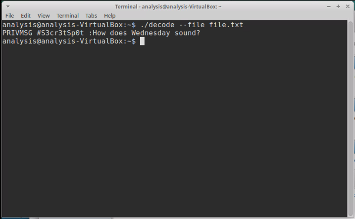
For the second Wireshark pcap file, the question was determining the city that the meeting will take place. This case was more difficult to determine than the previous. Most of the methods that were applied from the previous case did not work. The conspirators were more careful in this case. The first step that was taken in this case was sorting the TCP streams and looking through each of them. During the inspection, there was a fishy file named r3nd3zv0us. The file triggered red flags and prompted further investigation that revealed the sender tried to transfer a 819200 byte file. The stream was followed and extracted the file, but the file did not have any particularly known format, so the search continued. The next step involved identifying the different hosts that were present in the pcap file and decoding any suspicious messages. Eventually, this search led to a message that was sent via the hose, mail.aol.com. After decoding the message, the message's details were about meeting up again, alongside a password, S3cr3tVV34p0n, that will reveal the location of the meeting. The password was ambiguous in the beginning, but when it was applied to the 819200 byte file that was extracted earlier via Truecrypt, it revealed text file that contained the message, "See you soon," and an image of the meeting location, Las Vegas.
Suspicious Message and File
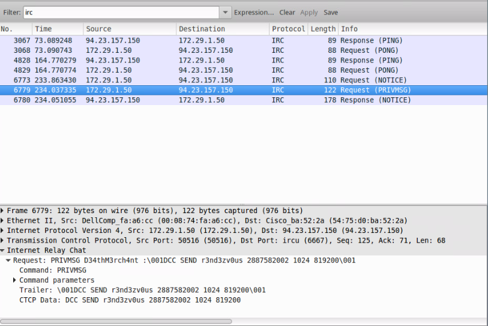
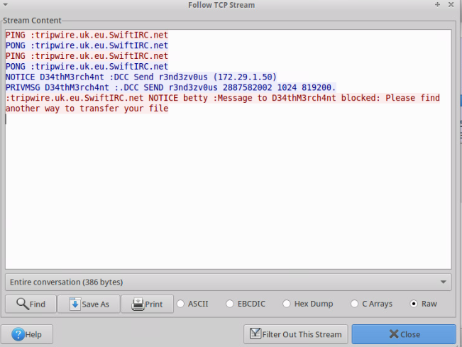
Encrypted Image of Meeting Place
The third Wireshark pcap file was more simple than the second. The third question asks about the number of bytes that was contained in the malicious payload. The first step for this process involved filtering the HTTP results and look for the HTTP GET request that was responsible. One of the GET results involved the website, paimia.com. After investigating the website, the site has a history with malware, so the stream was investigated further and identified the number of bytes inside that payload to be 3113.
Malicious Payload
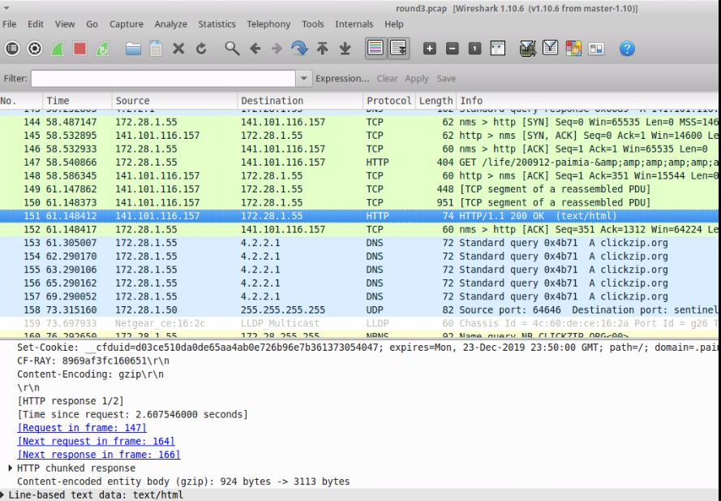
For the second lab, the main objective was to utilize Python scripts to analyze another set of data for analysis and discover certain patterns. For the first question, it was found that the most prominent TCP destination port inside R.csv was 139 with 137 as the most prominent UDB destination port. With the /etc/services file, the communications are affiliated with a communication service named NETBIOS. For O.csv, the most prominent TCP destination port was 25 with 5001 as the most prominent USB destination port. With the service file, the TCP port was identified as a SSH Remote Login Protocol for mail. The UDB destination port had to be looked up online that revealed it as a port for communications protocol alongside a history of affiliations with malware. It is likely that the communications in O.csv are based on an attacker from home or work.
The third question investigates the IP addresses within the stored data based on usage. For R.csv, the most prominent source IP was 10.5.63.230 with 43,338 usage count. The most prominent destination IP was 234.142.142.142, running with a usage count of 42981. The network prefix that dominates the communication for R.csv is likely class A [0.0.0.0 - 127.255.255.255, default mask /8]. For O.csv, the source IP with highest usage count was 192.245.12.221 at 169,643 times. For destination IP, 192.245.12.221 had the highest with a usage count of 118,662 times. The network prefix that dominates the communication for O.csv is likely class C [192.0.0.0 - 223.255.255.255, default mask /24].
Question six of the lab involves categorizing the different protocols of the IP addresses. GRE, IPSEC, and OSPF are the protocols of interest. GRE's protocol number is 47. IPSEC's protocol number is 51. OSPF's protocol number is 89. After analyzing through both R.csv and O.csv, only O.csv contained IP addresses with affiliation to the protocols of interest. The IP addresses for each affiliation are shown below. For question eight, the OSPF information confirms the answer for question 2 from earlier that the communications in O.csv are based in a home or work network as the limited number of IP addresses suggests that routers for the communications are based within the same broadcast domain.
Protocol Counts
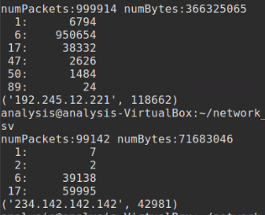
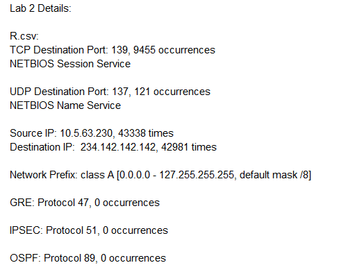
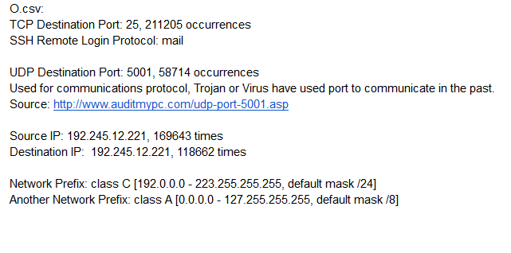
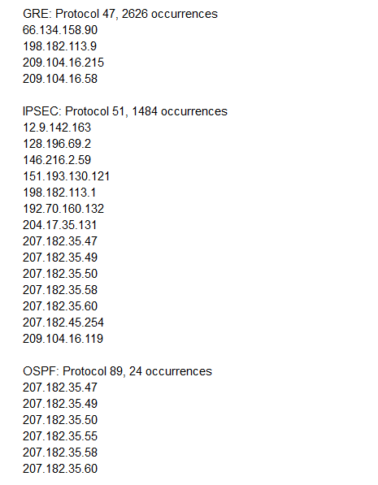
Python Script
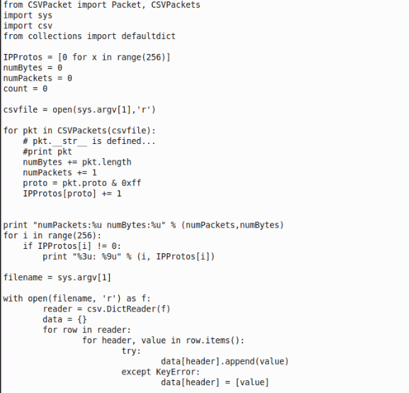
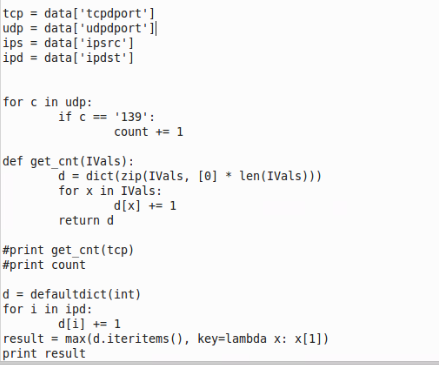
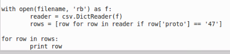
Robustness Coloring
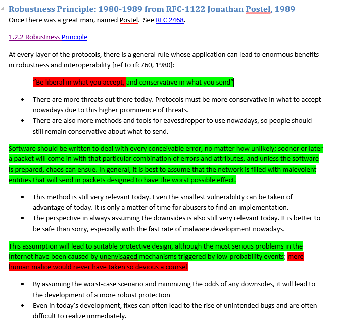
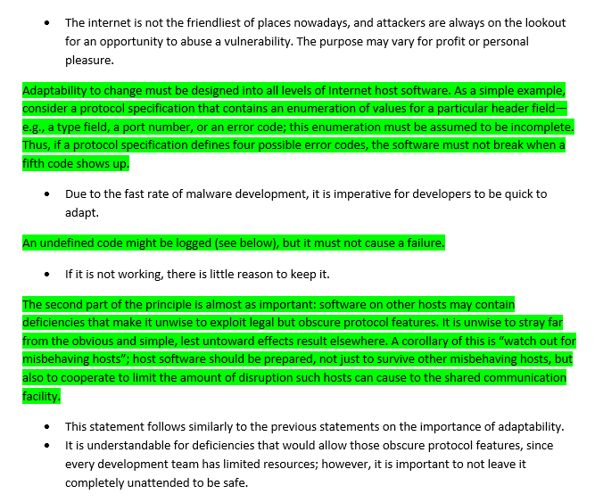
Firewall Policy
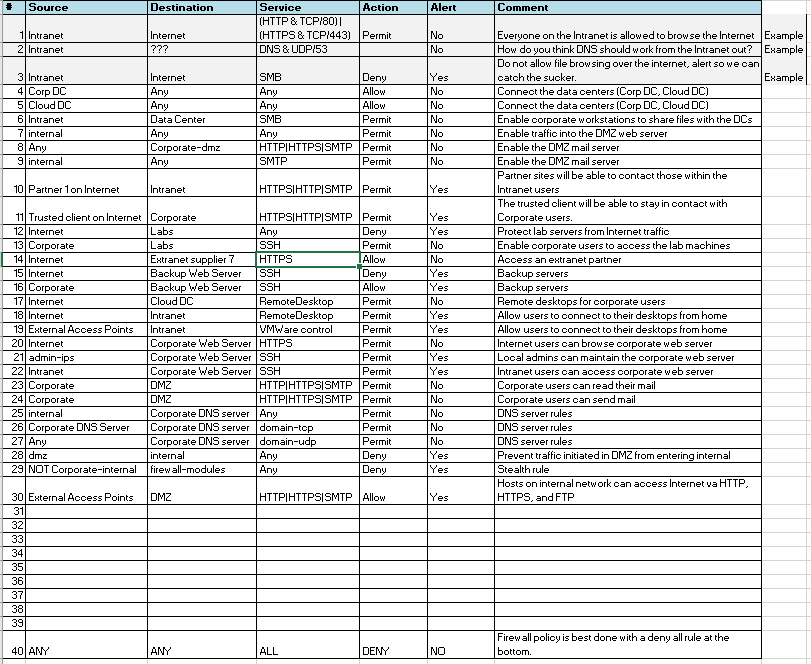